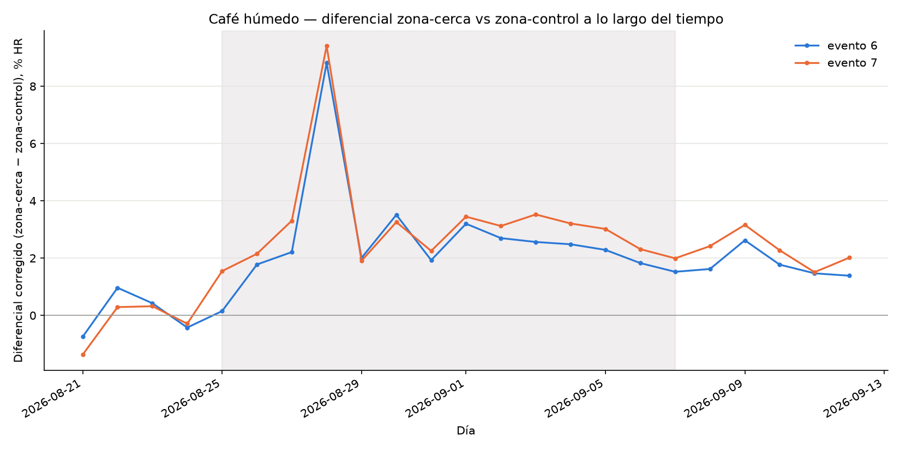
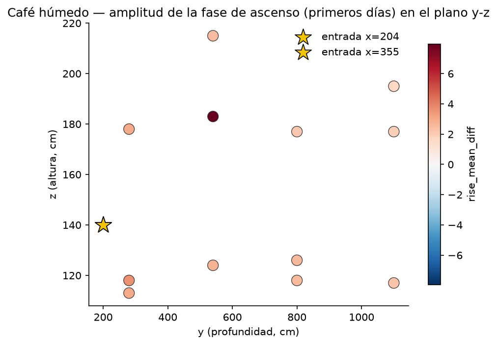
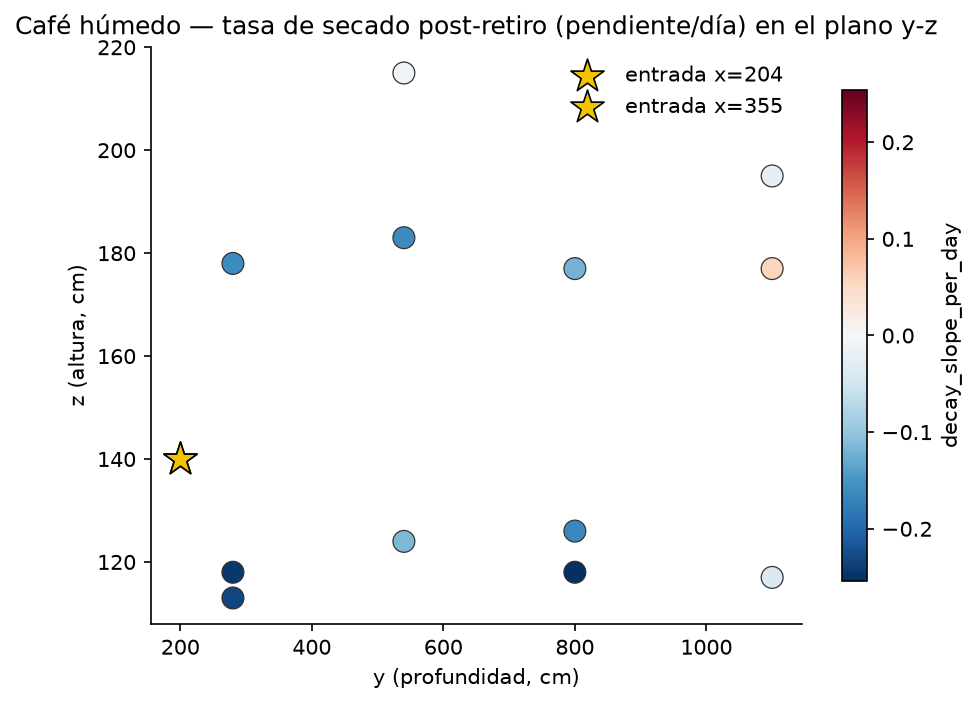

Café húmedo: la humedad llega a casi toda la nave
Del 25 de agosto al 7 de septiembre hubo café húmedo en el extremo sureste: una capa de unos 2 cm en cada una de las tres camas, en dos áreas contiguas (zona A). Los sensores muestran hasta dónde llegó su humedad.
Lo que se vio mientras había café
-
Sólido
Justo al lado de cada área de café, la humedad subió unos 9 puntos sobre lo normal.
+8,8 puntos junto al área del centro y +9,4 junto a la del lado de las ventanas. Las dos dan una señal clara y parecida.
-
Sólido
En casi todo el resto de la nave, hasta unos 9 metros del café, la humedad también subió: entre 2 y 4 puntos, y no baja con la distancia.
Pasó en 11 de 12 sensores. Estar lejos del café, dentro de ese rango, no significó aire más seco.
-
Sólido
La línea 5, en el extremo de la Ventana O, a más de 10 metros del café, no mostró subida.
Es la única zona que se comporta distinto: no es "un poco menos húmeda", es "sin señal". Por eso es la candidata más clara a zona más seca mientras hay café húmedo.

Lo que todavía no se sabe: qué zonas se secan más rápido
-
Por confirmar
Después de sacar el café, casi todos los sensores tienden a volver a lo normal, pero ninguna zona muestra todavía una velocidad de secado confiable.
Solo había 5 días de datos después del retiro. La pregunta que más importa para decidir dónde poner el café es esta, y se resuelve volviendo a correr el análisis cuando haya más días.
Qué significa
Mientras hay café húmedo, la mayor parte de la nave comparte una carga de humedad parecida: alejar el café unos metros no lo pone en aire más seco. La excepción es el extremo de la Ventana O. El modelo del aire coincide con esto: a la mitad noroeste de la nave la humedad del café llega menos y más tarde (ver El modelo).
Todo esto mide la humedad del aire alrededor del café, no la del grano. Para saber cuánto se está secando el café mismo hay que pesarlo o medirlo dentro del grano (ver Próximos pasos).
Detalle técnico método, referencia, valores atípicos
Método. Cada día se compara la zona junto al café con una zona de control lejos de las dos áreas (la línea 5, a ≥ 10 m), y se corrige con la diferencia que ya existía entre las dos zonas antes de que llegara el café. Es la misma idea de "diferencia en diferencias" de las pruebas de ventilador, pero con un control dentro de la nave en vez de afuera. La línea 5 es, por construcción, la referencia: las subidas de los demás sensores se miden respecto de ella.
Las dos áreas estuvieron al mismo tiempo. Un sensor lejos de ambas mide el efecto combinado; no se puede atribuir a una sola. Solo los sensores pegados a cada área (a 83–90 cm) separan las dos. Por eso el resto se reporta en una sola tabla, por distancia al área más cercana.
Valor atípico. El sensor 311 (+7,95 puntos) tuvo solo 2 días de datos antes del café en vez de 4, así que su punto de partida es menos confiable.
Secado. Pendientes después del retiro: entre −0,01 y −0,25 puntos por día en casi todos los sensores con señal; ninguna significativa (p > 0,11, 5 días por sensor). El sensor 323, en el borde del área medida, da +0,056 (tampoco significativo, probablemente ruido).

